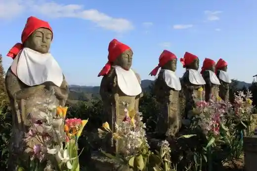
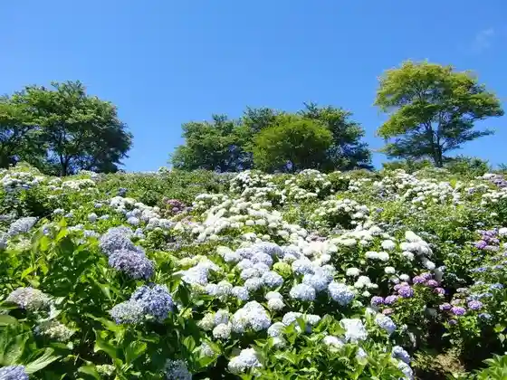
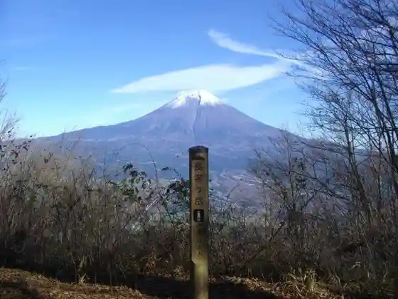
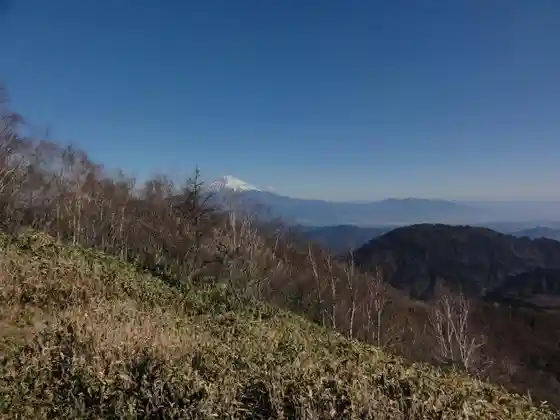

Fukushi Kawa Gorge (Fukushigawakeikoku)
Nambucho, Yamanashi · 0556-66-2111 · Official / source link
Rokujizo Park (Rokujizokoen)
Nambucho, Yamanashi · 0556-66-2111 · Official / source link

Utsubuna Park (Utsubunakoen)
Nambucho, Yamanashi · 0556-64-4838 · Official / source link

Chojagagaku (Chojagatake)
Nambucho, Yamanashi · 0556-64-3111 · Official / source link

Ju Mai Yama (Jumaisan)
Nambucho, Yamanashi · 0556-64-3111 · Official / source link

Sasai Yama (Shi no Isan)
Nambucho, Yamanashi · 0556-64-4838 · Official / source link
Taka Dokkyo (Takadokkyo)
Nambucho, Yamanashi · 0556-64-3111 · Official / source link
Kangagaku (Kangatake)
Nambucho, Yamanashi · 0556-64-3111 · Official / source link
Hongo no Sennen Sakura (Hongo no Sennenzakura)
Nambucho, Yamanashi · 0556-66-2111 · Official / source link
Hara Kan no Itozakura (Harama no Itozakura)
Nambucho, Yamanashi · 0556-66-2111 · Official / source link
Take no Ko Kari (Nambucho) (Take no Kogarinambucho)
Nambucho, Yamanashi · 0556-66-2111 · Official / source link
Omoi Oya Yama (Shishinzan)
Nambucho, Yamanashi · 0556-66-2111 · Official / source link
Hakucho Yama (Shiratoriyama)
Nambucho, Yamanashi · 0556-66-2111 · Official / source link
Saigyo Park (Saigyokoen)
Nambucho, Yamanashi · 0556-64-3111 · Official / source link
Fukushi Kawa Keikoku Seishonen Ryoko Village (Fukushigawakeikokuseishonenryokomura)
Nambucho, Yamanashi · 0556-66-3366 · Official / source link
Arukadia Nambucho General Park Bunka Kan (Arukadianambusogokoembunkakan)
Nambucho, Yamanashi · 0556-62-9292 · Official / source link
Nai Fune Tera (Naisenji)
Nambucho, Yamanashi · 0556-64-3111 · Official / source link